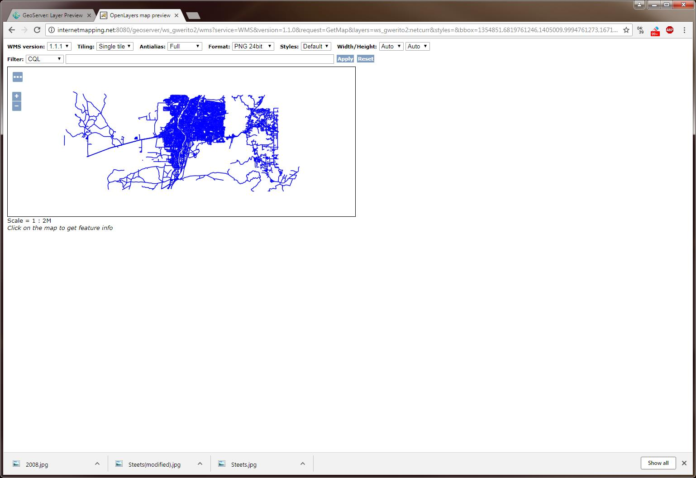
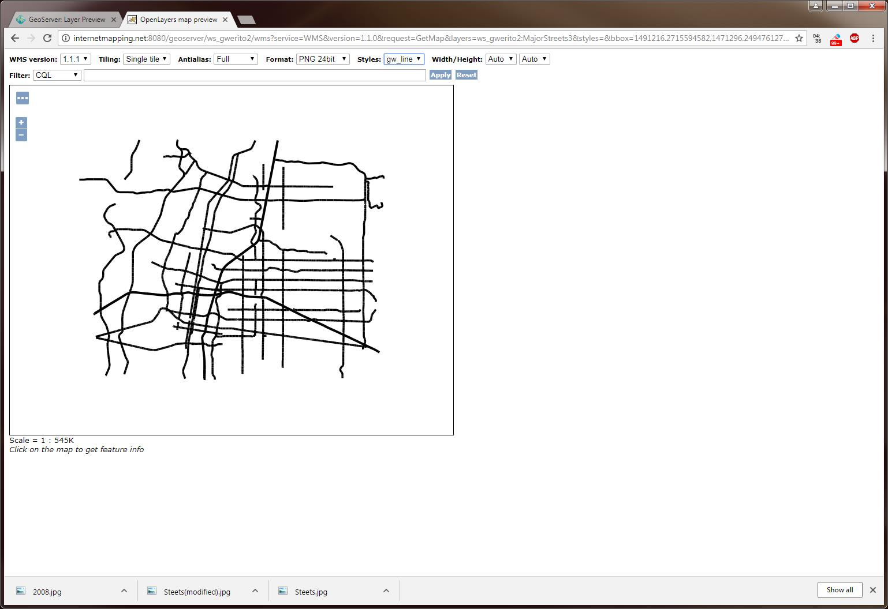
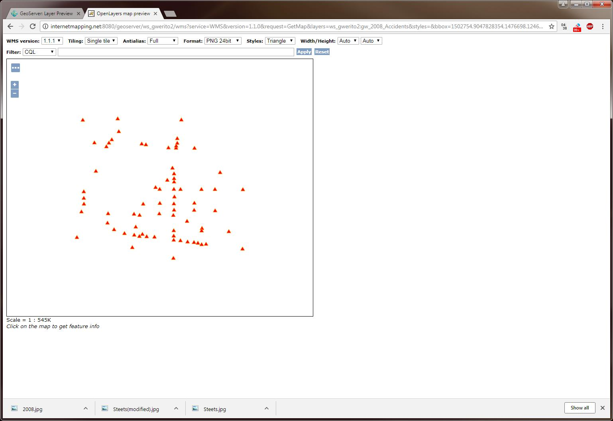
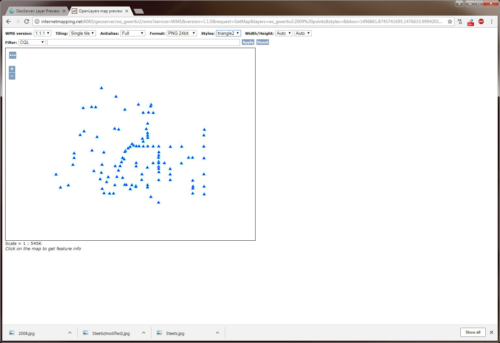
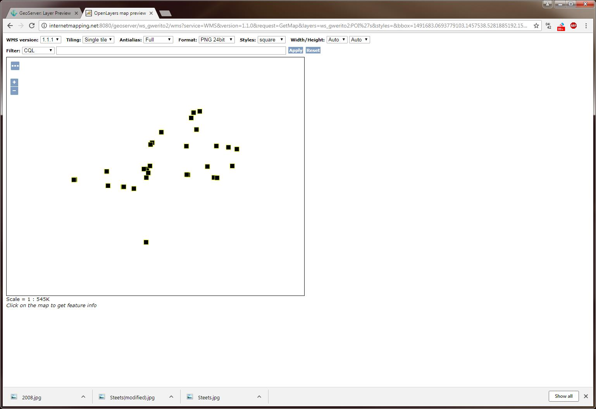

Gary Werito
4/30/2018
Data Integration and Styling in GeoServer
City of Albuquerque; netcurr (streets)
Style - Default

City of Albuquerque; netcurr (modified)
Style - gw_line

City of Albuqueque; Accidents (2008)
Style - triangle (point)

City of Albuqueque; Accidents (2009)
Style - triangle2 (point)

Drinking Establishments
Style - square

Home Page